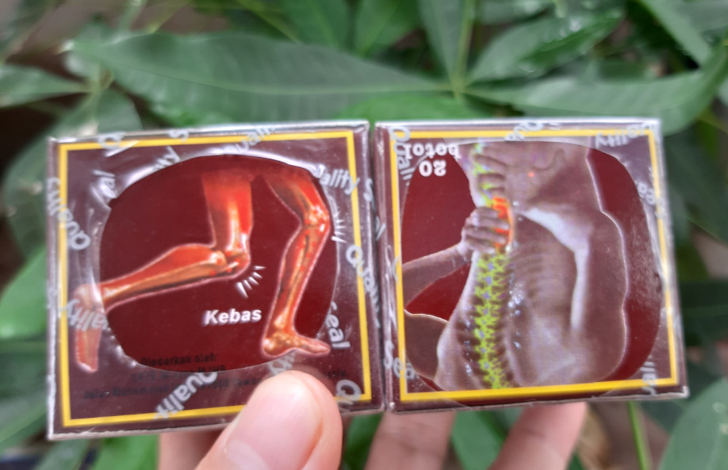

NGUYÊN NHÂN DẪN ĐẾN ĐAU NHỨC XƯƠNG KHỚP¶
.jpg)
1. Do tuổi tác¶
Thông thường thì tuổi cao là một trong những nguyên nhân chính dẫn đến đau nhức xương khớp, tuổi cao thì xương khớp bị thoái hóa, các mạch máu bị cản trở nên lưu thông chậm dẫn đến hiện tượng đau nhức xương khớp Do tuổi tác: Tuổi càng cao tình trạng lão hóa xương diễn ra càng nhanh, quá trình này có thể dẫn tới tổn thương cấu trúc xương, sụn, đĩa đệm, bao hoạt dịch… gây đau nhức xương khớp. Theo quan điểm của đông y - y học cổ truyền thì đau nhức xương khớp do khí huyết không lưu thông nên dẫn đến đau nhức xương khớp…
2. Do chấn thương tai nạn¶
Do chấn thương, tai nạn: Các chấn thương trong lao động, tai nạn giao thông, vấp ngã có thể khiến xương bị gãy, nứt, trật khớp… làm tổn thương xương khớp gây đau.
3. Do mắc các bệnh lý về xương khớp¶
Do mắc các bệnh lý về xương khớp:thoái hóa khớp, loãng xương, viêm khớp dạng thấp, bệnh gout, thoát vị đĩa đệm…
4. Do mắc các bệnh rối loạn chuyển hóa¶
Do mắc các bệnh rối loạn chuyển hóa: Đái đường, thiếu canxi, thừa cân, béo phì… gây nên những bất thường trong hệ thống xương khớp dẫn tới đau.
5. Do các nguyên nhân khác¶
Do nguyên nhân khác: thời tiết lạnh, tập thể thao quá mức, lao động năng nhọc…
6. Cách chữa trị đau nhức xương khớp Có nhiều cách chữa trị đau nhức xương khớp, theo chúng tôi tùy từng chứng bệnh cụ thể mà có những phương pháp điều trị riêng Nếu chỉ đau nhức mà vẫn vận động làm việc được thì nên dùng thuốc xoa bóp hoặc bấm huyệt, hoặc thủy châm, hoặc châm cứu Trường hợp đau nhức mà vẫn đi làm được thì bạn nên dùng thuốc xương khớp của malaysia Xem thuốc xương khớp malaysia
Nếu bị mức mà không vận động được thì nên kết hợp các bài thuốc để chữa trị: Như uống thuốc, châm cứu, thủy châm, đắp thuốc, xoa bóp, bấm huyệt
Xem tiếp bài viết Cách chữa đau nhức xương khớp bằng thảo dược Cách chữa đau nhức xương khớp bằng thuốc xương khớp malaysia
Video
Note
Liên hệ Thảo mộc HHT - Điện thoại: 0964.421.551 - 0932.340.345
.jpg)
#trích nguồn từ internet